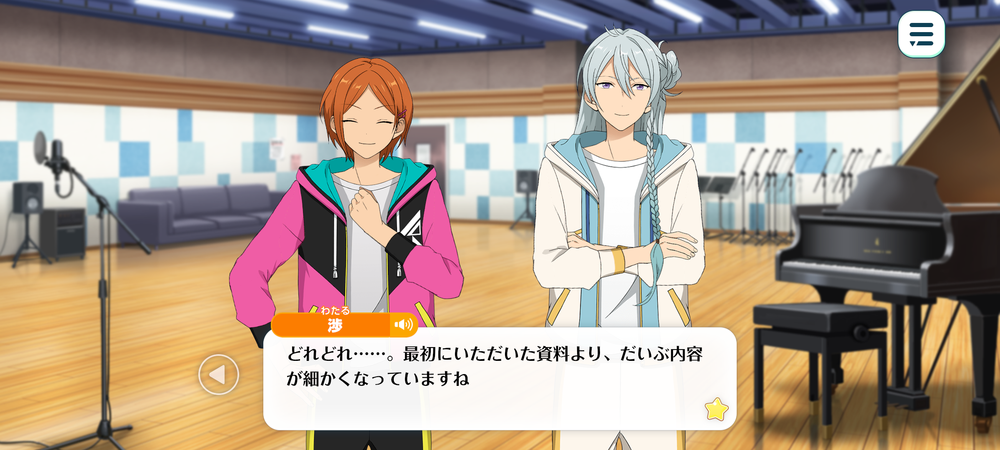
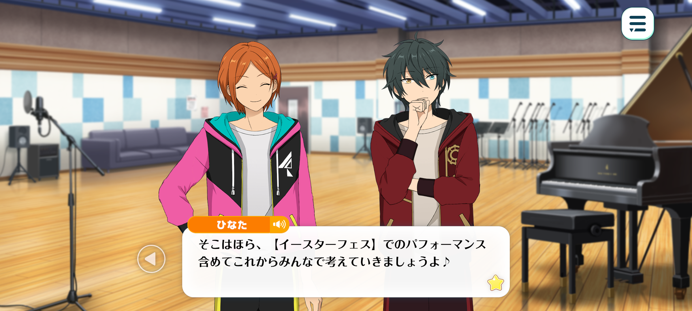
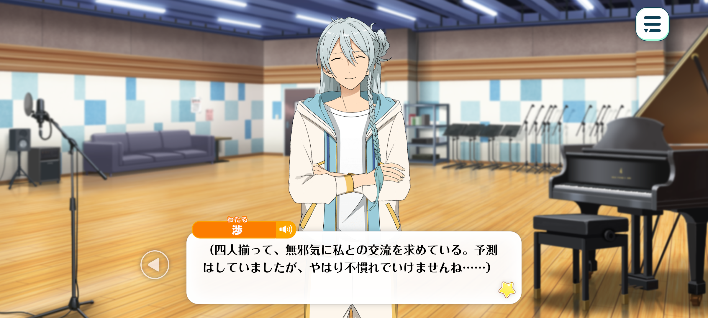

Easter To You
⌒Joyful 1⌒



Hinata: Let's get this show on the road! First, we should look through the documents Anzu-san sent us and get a feel for what we'll be doing!
Wataru: Yes, yes... These are much more detailed than the ones we received initially.
Shinobu: Hmm. It seems we'll be making several appearances throughout Easter Fes as a unit.
We'll be taking the stage, participating in events... I suppose you could say we're something like promotional ambassadors, yes?
Mika: Looks like it. So, the first thing we gotta do as a shuffle unit is perform at the opening ceremony...
Hiiro: Hmm. First up, we have to give a live announcement. It says we're supposed to "welcome spring with a bright and lively opening."
Mika: Anzu-chan, what kinda song are we gonna be singin'? Have ya decided whether it'll be a new one?
Wataru: Ohho? You've already prepared a demo for us, just in time for today's meeting! On behalf of everyone, allow me to express our gratitude!
Shinobu: If that's the case, then we must repay Anzu-dono's hard work with an equally wonderful performance! I can hardly wait to hear it! ♪
Hinata: I'm sooo excited~! I can't wait to find out what our song sounds like...!
Time: A few minutes later

Mika: Hhh~... So this is the kinda song we're workin' with. I can definitely feel that lively energy.
It's nothin' like Valkyrie's music, that's fer sure. How am I supposed to approach this?
Hinata: We should figure out together how we're gonna perform it! ♪
I really like the feel of this song, though. I'm usually singing as part of a duo, so this is a whole new experience for me!
Hiiro: Hmm. So, about our Easter Fes performance...
What do you think, Wataru-senpai?
Wataru: Oh? You're asking me? Well, Shinobu-kun is used to performing in a group of five, so perhaps we could learn a thing or two from him instead.
Shinobu: N-no, not at all! I feel the same way as Hiiro-kun. I'd much rather hear what you think about it first!
Wataru: And why is that?
Shinobu: Huh? I'm not quite sure what you mean... Is it strange to ask for our senpai's opinion?
Hiiro: That's right. Each unit may be different, but we're still your kouhai, Wataru-senpai.
I thought it was only natural that we'd want to hear what you had to say... Was I wrong to ask?
Wataru: Ah, my apologies. I didn't mean to make you worry.
I suppose you're right. I am the eldest, after all... I used to be everyone's senpai.
...However, I'm no different from the rest of you. We're all members of the same unit.
Every one of us has a part to play, regardless of whether we're someone's senpai or kouhai. And neither our personal circumstances nor our experience as performers should make any difference. Let us decide this together, as a team.
Mika: Fufu. Well, now that you've said that, it's a lot easier for us t'speak our minds. I'm glad you're being so open with us...♪
Hinata: Just don't go doing the opposite and keep your own thoughts to yourself, Hibiki-senpai! We should all be able to speak freely.
And don't hold back when we're practising, either! We don't mind if you push us as hard as you like!
Shinobu: Hibiki-dono's physical abilities are truly remarkable~! I'm always amazed by the way he moves. His movements are so impressive!
Hiiro: Umu. I want to learn as much as I can from him during our lessons. I'm sure we can put what we learn to good use on stage!

Wataru: (...I'm usually delighted to have everyone's eyes on me when I'm on stage, but having everyone look at me like this feels... well, rather embarrassing, doesn't it?)
(They're all waiting so innocently for my response. I had a feeling this would happen, so I really shouldn't be surprised...)
...? Anzu-san, is something the matter?
You're asking if I'm all right? Of course! As you can see, I'm perfectly fine. Your usual Hibiki Wataru, at your service!
Everyone's waiting for my answer, so I'd better come up with something worthwhile.
If Anzu-san has no objections to me taking the lead of these young ones... then I suppose I'll carry on as I am...♪
Mika: —Hnn? Anzu-chan, sounds like yer phone's ringin'.
Ohh, ya gotta head off to yer next job, huh? Yer as busy as ever!
Hinata: Is there anything we’re bothered about? Nope! Everything's going great so far. Looks like Hibiki-senpai's gonna be a great teacher!
I'd love to learn from him and grow as much as I can. And not just while we're getting ready for the festival, either. I wanna challenge myself in other areas, too...
Nothing’s come to mind yet. But there’ll be plenty of opportunities for me throughout Easter Fes, so I really wanna make it worthwhile.
Shinobu: First things first, let's all put our heads together and work out what we're going to do for the stage! You can leave this to us, Anzu-dono! Off you go to your next job!